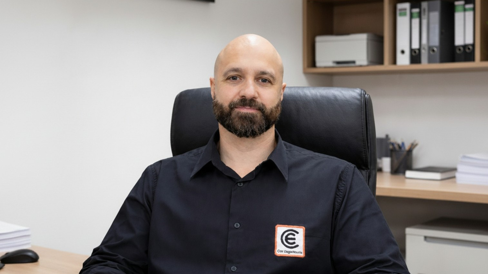
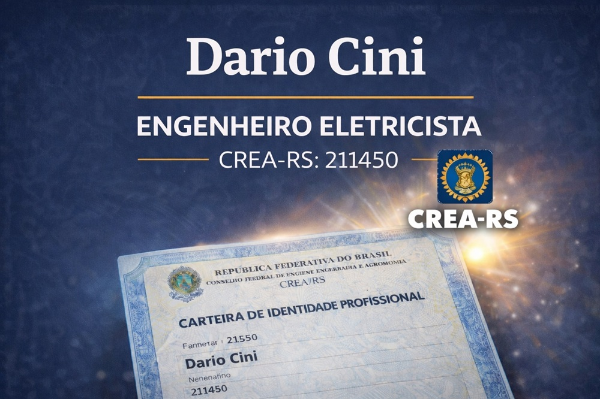

Projetos, laudos e consultoria em engenharia elétrica para empresas e indústrias.
Com ART do engenheiro eletricista Dario Cini, CREA-RS 211.450.
Telefone: (54) 99947-5010
Telefone: (51) 99961-3451
E-mail: contato@ciniengenharia.com.br

Projetos e laudos assinados por engenheiro eletricista, com ART registrada no CREA. Atendimento presencial em toda a Serra Gaúcha e Grande Porto Alegre.
Dario Cini, engenheiro eletricista com formação pela Universidade de Caxias do Sul e atuação na área de engenharia elétrica há mais de 10 anos.
CREA-RS 211.450
CNPJ 25.268.313/0001-56
